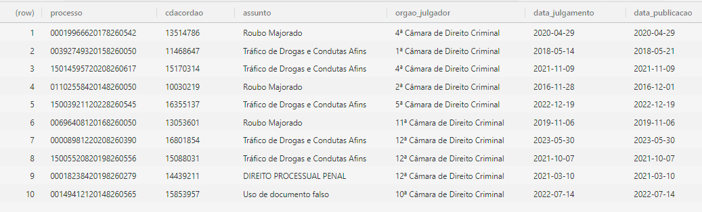

Dados arrumados (tidy data)
Conceito
Tidy data é um princípio de organização de dados que ajuda a simplificar a análise de dados. A motivação desse conceito é que, no mundo real, lidamos com dados em diversos formatos e estruturas, o que pode dificultar a análise. Ao colocar o princípio de dados arrumados em prática, aceleramos o processo de análise e facilitamos a comunicação dos resultados.
O conceito foi proposto por Hadley Wickham em 2014 e é baseado em três princípios:
- Cada observação forma uma linha.
- Cada variável forma uma coluna.
- Cada valor forma uma célula.
A Figura 1 ilustra esses princípios.
Vamos analisar o primeiro princípio: cada observação forma uma linha. Note que estamos ligando conceitos de duas áreas do conhecimento distintas: a estatística e a computação. Na estatística, uma unidade amostral é um elemento da população que está sendo estudada. Por exemplo, se estamos estudando a altura de alunos de uma escola, cada aluno é uma unidade amostral. Na computação, uma linha é um registro de um banco de dados ou uma linha de um arquivo de texto. O primeiro princípio do tidy data estabelece que cada unidade amostral deve formar uma linha. Ou seja, se temos, por exemplo, uma tabela no Excel, cada linha (1, 2, 3, …) dessa tabela deve representar uma unidade amostral.
Exemplo que segue o primeiro princípio:
Código
dados <- tribble(
~id, ~altura, ~peso,
1, 1.70, 70,
2, 1.80, 80,
3, 1.60, 60
)
knitr::kable(dados)| id | altura | peso |
|---|---|---|
| 1 | 1.7 | 70 |
| 2 | 1.8 | 80 |
| 3 | 1.6 | 60 |
Exemplo que não segue o primeiro princípio:
Código
dados <- tribble(
~id, ~tipo_medida, ~valor,
1, "altura", 1.70,
1, "peso", 70,
2, "altura", 1.80,
2, "peso", 80,
3, "altura", 1.60,
3, "peso", 60
)
knitr::kable(dados)| id | tipo_medida | valor |
|---|---|---|
| 1 | altura | 1.7 |
| 1 | peso | 70.0 |
| 2 | altura | 1.8 |
| 2 | peso | 80.0 |
| 3 | altura | 1.6 |
| 3 | peso | 60.0 |
No exemplo acima, a tabela não segue o primeiro princípio do tidy data, pois cada unidade amostral (cada pessoa) não forma uma linha. Em vez disso, cada unidade amostral é dividida em duas linhas, uma para a altura e outra para o peso. Para seguir o primeiro princípio do tidy data, a tabela deveria ser organizada de forma que cada unidade amostral formasse uma linha.
A segunda tabela está no formato que chamamos de “longo” (ou “long format”). Esse formato é comum em bases de dados que não seguem o primeiro princípio do tidy data, mas existem situações em que esse formato é útil (veremos mais adiante).
Para transformar a base de dados que não segue o primeiro princípio do tidy data em uma base de dados que segue o primeiro princípio do tidy data, podemos usar a função pivot_wider() do pacote tidyr. Essa função transforma a base de dados de longo para largo. Veja o exemplo a seguir:
Código
dados <- tribble(
~id, ~tipo_medida, ~valor,
1, "altura", 1.70,
1, "peso", 70,
2, "altura", 1.80,
2, "peso", 80,
3, "altura", 1.60,
3, "peso", 60
)
dados_largo <- dados |>
pivot_wider(names_from = tipo_medida, values_from = valor)
knitr::kable(dados_largo)| id | altura | peso |
|---|---|---|
| 1 | 1.7 | 70 |
| 2 | 1.8 | 80 |
| 3 | 1.6 | 60 |
O segundo princípio é que cada variável deve formar uma coluna. Nesse caso, o conceito estatístico de variável é o de variável aleatória, que é uma característica da observação que pode ser medida por algum instrumento. Por exemplo, no exemplo da escola, se estamos estudando a altura e o peso de alunos, a altura e o peso são variáveis. Já o conceito computacional é o da coluna, que é uma coluna de uma tabela de banco de dados ou de um arquivo de texto. O segundo princípio do tidy data estabelece que cada variável deve formar uma coluna. Ou seja, se temos, por exemplo, uma tabela no Excel, cada coluna (A, B, C, …) dessa tabela deve representar uma variável.
Exemplo que não segue o segundo princípio:
Código
dados <- tribble(
~tipo, ~alice, ~bruno, ~carla, ~daniel,
"altura", 1.70, 1.80, 1.60, 1.75,
"peso", 70, 80, 60, 75
)
knitr::kable(dados)| tipo | alice | bruno | carla | daniel |
|---|---|---|---|---|
| altura | 1.7 | 1.8 | 1.6 | 1.75 |
| peso | 70.0 | 80.0 | 60.0 | 75.00 |
Nesse exemplo, a tabela não segue o segundo princípio do tidy data, pois cada variável (altura e peso) não formam colunas. Em vez disso, cada variável é dividida em quatro colunas, uma para cada pessoa. Vamos arrumar essa tabela para que ela siga o segundo princípio do tidy data. Primeiro, deixamos essa base no formato longo, usando a função pivot_longer():
Código
dados_longo <- dados |>
pivot_longer(cols = -tipo, names_to = "nome", values_to = "valor")
knitr::kable(dados_longo)| tipo | nome | valor |
|---|---|---|
| altura | alice | 1.70 |
| altura | bruno | 1.80 |
| altura | carla | 1.60 |
| altura | daniel | 1.75 |
| peso | alice | 70.00 |
| peso | bruno | 80.00 |
| peso | carla | 60.00 |
| peso | daniel | 75.00 |
Essa base, no entanto, ainda não está arrumada, pois está no formato largo. Para arrumá-la, usamos a função pivot_wider(), que vimos anteriormente:
Código
dados_arrumados <- dados_longo |>
pivot_wider(names_from = tipo, values_from = valor)
knitr::kable(dados_arrumados)| nome | altura | peso |
|---|---|---|
| alice | 1.70 | 70 |
| bruno | 1.80 | 80 |
| carla | 1.60 | 60 |
| daniel | 1.75 | 75 |
Finalmente, o terceiro princípio é que cada valor deve formar uma célula. Nesse caso, o conceito estatístico de valor é o de valor da variável, que é a medida da variável para uma unidade amostral. Por exemplo, se estamos estudando a altura de alunos de uma escola, o valor da variável altura para um aluno é a altura desse aluno. Já o conceito computacional é o da célula, que é uma célula de uma tabela de banco de dados ou de um arquivo de texto (o cruzamento entre uma linha e uma coluna). O terceiro princípio do tidy data estabelece que cada valor deve formar uma célula. Ou seja, se temos, por exemplo, uma tabela no Excel, cada célula (A1, A2, B1, B2, …) dessa tabela deve representar um valor.
Exemplo que não segue o terceiro princípio:
Código
dados <- tribble(
~id, ~altura_peso,
1, "1.70 / 70",
2, "1.80 / 80",
3, "1.60 / 60",
4, "1.75 / 75"
)
knitr::kable(dados)| id | altura_peso |
|---|---|
| 1 | 1.70 / 70 |
| 2 | 1.80 / 80 |
| 3 | 1.60 / 60 |
| 4 | 1.75 / 75 |
Nesse exemplo, a tabela não segue o terceiro princípio do tidy data, pois cada valor (altura e peso) não formam células. Em vez disso, os valores são agrupados em uma única célula, que contém a altura e o peso separados por uma barra. Vamos arrumar essa tabela para que ela siga o terceiro princípio do tidy data. Para isso, dividimos a coluna altura_peso em duas colunas, altura e peso, usando a função separate():
Código
dados <- tribble(
~id, ~altura_peso,
1, "1.70 / 70",
2, "1.80 / 80",
3, "1.60 / 60",
4, "1.75 / 75"
)
dados_arrumados <- dados |>
separate(altura_peso, into = c("altura", "peso"), sep = " / ")
knitr::kable(dados_arrumados)| id | altura | peso |
|---|---|---|
| 1 | 1.70 | 70 |
| 2 | 1.80 | 80 |
| 3 | 1.60 | 60 |
| 4 | 1.75 | 75 |
Até agora, vimos os três princípios do tidy data e como arrumar uma base de dados que não segue esses princípios. No entanto, é importante ressaltar que nem sempre é muito claro se uma base de dados segue ou não os princípios do tidy data. Por exemplo, a base de dados pode estar no formato longo, mas isso não significa necessariamente que ela não segue os princípios do tidy data. Por exemplo, se estamos estudando a evolução da altura e do peso de alunos ao longo do tempo:
Código
dados <- tribble(
~id, ~mes, ~altura, ~peso,
"1", 1, 1.70, 70,
"1", 2, 1.72, 75,
"1", 3, 1.80, 80,
"2", 1, 1.80, 80,
"2", 2, 1.87, 85,
"2", 3, 1.90, 90,
"3", 1, 1.60, 60,
"3", 2, 1.64, 65,
"3", 3, 1.70, 70
)
knitr::kable(dados)| id | mes | altura | peso |
|---|---|---|---|
| 1 | 1 | 1.70 | 70 |
| 1 | 2 | 1.72 | 75 |
| 1 | 3 | 1.80 | 80 |
| 2 | 1 | 1.80 | 80 |
| 2 | 2 | 1.87 | 85 |
| 2 | 3 | 1.90 | 90 |
| 3 | 1 | 1.60 | 60 |
| 3 | 2 | 1.64 | 65 |
| 3 | 3 | 1.70 | 70 |
Nesse caso, é mais fácil organizar esses dados no formato longo, com uma coluna para a altura e outra para o peso, e uma linha para cada observação (altura e peso de um aluno em um determinado momento). Nesse caso, na prática, estamos definindo que a observação é a combinação de aluno e período, ainda que cada unidade amostral seja um aluno. Assim, a base de dados está arrumada, mesmo estando no formato longo.
Esse formato, inclusive, é o preferido para fazer visualizações de dados com o pacote ggplot2. Por exemplo:
Código
dados |>
ggplot(aes(x = mes, y = altura, color = id)) +
geom_line() +
labs(title = "Evolução da altura dos alunos ao longo do tempo")Ou seja, o princípio do tidy data pode ser adaptado dependendo dos objetivos de uma análise. Para cada análise, é importante definir o que é uma observação, o que é uma variável e o que é um valor, de acordo com o contexto do problema. Isso é o que torna o tidy data um conceito tão poderoso e flexível.
Aplicações no Direito
No Direito, tipicamente as bases de dados são organizadas de forma que cada linha representa um processo judicial e cada coluna representa uma variável relacionada ao processo. Por exemplo, podemos ter uma base de dados com as seguintes colunas: número do processo, data de ajuizamento, valor da causa, tipo de ação, juiz responsável, entre outras. Nesse caso, cada linha representa um processo judicial e cada coluna representa uma variável relacionada ao processo.
Também é possível trabalhar com bases cuja observação não é o processo judicial. Por exemplo, um processo pode ter vários recursos. Nesse caso, podemos colocar cada recurso em uma linha e cada variável relacionada ao recurso em uma coluna. Por exemplo, podemos ter uma base de dados com as seguintes colunas: número do processo, número do recurso, data de interposição, resultado, relator, entre outras. Nesse caso, cada linha representa um recurso e cada coluna representa uma variável relacionada ao recurso.

Outro exemplo de caso em que a observação não é o processo é quando trabalhamos com as tabelas de partes ou de movimentações do processo. Nesse caso, cada linha representa uma parte ou uma movimentação do processo e cada coluna representa uma variável relacionada à parte ou à movimentação.
Exemplo: Differences in Differences (DiD)
Estamos fazendo uma pesquisa para identificar se houve impacto da troca de juiz no valor de indenização por danos morais em processos judiciais relacionados inscrição indevida no cadastro de inadimplentes. Por hipótese, a troca de juiz pode ter impacto no valor da indenização, pois diferentes juízes podem ter diferentes critérios para determinar o valor da indenização.
Para isso, desenhamos um experimento da seguinte forma. Coletamos processos de duas varas específicas, uma em que houve troca de juiz e outra em que não houve troca de juiz. Em cada vara, coletamos processos anteriores e posteriores à troca de juiz. Assim, temos quatro grupos: processos anteriores à troca de juiz na vara A, processos posteriores à troca de juiz na vara A, processos anteriores à troca de juiz (da vara A) na vara B e processos posteriores à troca de juiz (da vara A) na vara B.
Esse é um cenário clássico de Differences in Differences (DiD), uma técnica estatística para estimar o efeito causal de uma intervenção em um grupo de tratamento em relação a um grupo de controle. Nesse caso, a intervenção é a troca de juiz e o grupo de tratamento é a vara A, enquanto o grupo de controle é a vara B. Pela forma em que o judiciário se organiza, temos uma situação de experimento natural, já que os processos são distribuídos aleatoriamente nas varas. Ou seja, os juízes recebem amostras homogêneas e comparáveis de processos.
A técnica DiD é poderosa porque ela consegue isolar explicações alternativas à mudança de juiz. Por exemplo, a mudança nos valores de indenização poderia ser fruto de uma mudança na legislação ou de uma mudança no entendimento geral do Tribunal ao longo do tempo. A técnica DiD controla essas explicações alternativas, pois compara a variação no valor de indenização entre os grupos de tratamento e controle antes e depois da intervenção. Como, além disso, os processos são distribuídos aleatoriamente, o experimento também controla por características dos processos que poderiam influenciar o valor da indenização.
A descrição do problema é a seguinte: “Vamos olhar para duas varas de Osasco: a 7ª vara cível e a 2ª vara cível. Na 7ª Vara, o juiz”Liege Gueldini de Moraes” assumiu em 01/05/2022, sucedendo o juiz WILSON LISBOA RIBEIRO. Na 2ª Vara, o juiz MARIO SERGIO LEITE é o juiz da vara desde 10/04/2008. Coletamos uma amostra de processos de cada uma dessas varas, desde 2021, para analisar o valor da indenização por danos morais.
Após a construção da base, ficamos com a seguinte estrutura:
Código
dados_did <- read_csv(
"https://github.com/c-eoe/tidydata/releases/download/data/da_did.csv"
)Rows: 344 Columns: 5
── Column specification ────────────────────────────────────────────────────────
Delimiter: ","
chr (3): processo, magistrado, vara
dbl (1): danos_morais
date (1): disponibilizacao
ℹ Use `spec()` to retrieve the full column specification for this data.
ℹ Specify the column types or set `show_col_types = FALSE` to quiet this message.Código
glimpse(dados_did)Rows: 344
Columns: 5
$ processo <chr> "1020804-57.2019.8.26.0405", "1016203-71.2020.8.26.04…
$ magistrado <chr> "MARIO SERGIO LEITE", "MARIO SERGIO LEITE", "MARIO SE…
$ disponibilizacao <date> 2020-06-15, 2021-02-12, 2020-01-07, 2021-06-25, 2021…
$ vara <chr> "2ª Vara Cível", "2ª Vara Cível", "2ª Vara Cível", "2…
$ danos_morais <dbl> 1451.7067, 1134.0395, 1384.6181, 1381.8672, 1121.6910…Essa base está no formato tidy? Para os fins de nossa análise sim, já que cada linha é um processo, temos uma coluna que identifica a vara, outra que identifica o magistrado e uma última que mostra o valor de indenização. Existem, no entanto, alguns tratamentos necessários para deixar nossa base no formato ideal para aplicação do DiD.
Para isso, vamos utilizar o chatGPT para nos ajudar no código. Utilizamos o seguinte prompt:
Você é um assistente de inteligência artificial que ajuda a escrever códigos R. Em meu estudo, quero fazer uma análise de Diferenças em Diferenças a partir de uma base de dados com a seguinte estrutura:
dplyr::glimpse(dados_did)
# Rows: 344
# Columns: 5
# $ processo <chr> "1020804-57.2019.8.26.0405", "1016203-71.2020.8.26.0405", "1026724-12.2…
# $ magistrado <chr> "MARIO SERGIO LEITE", "MARIO SERGIO LEITE", "MARIO SERGIO LEITE", "MARI…
# $ disponibilizacao <date> 2020-06-15, 2021-02-12, 2020-01-07, 2021-06-25, 2021-07-13, 2019-10-21…
# $ vara <chr> "2ª Vara Cível", "2ª Vara Cível", "2ª Vara Cível", "2ª Vara Cível", "2ª…
# $ danos_morais <dbl> 1451.7067, 1134.0395, 1384.6181, 1381.8672, 1121.6910, 1313.6028, 1788.…
A descrição do problema é a seguinte: "Vamos olhar para duas varas de Osasco: a 7ª vara cível e a 2ª vara cível. Na 7ª Vara, o juiz "Liege Gueldini de Moraes" assumiu em 01/05/2022, sucedendo o juiz WILSON LISBOA RIBEIRO. Na 2ª Vara, o juiz MARIO SERGIO LEITE é o juiz da vara desde 10/04/2008. Coletamos uma amostra de processos de cada uma dessas varas, desde 2021, para analisar o valor da indenização por danos morais."
Escreva o código para realizar a análise DiD a partir da estrutura da base de dados fornecida. Faça as transformações necessárias para que a base esteja no formato ideal para a análise, usando o tidyverse.O resultado do chatGPT é o que está nas imagens abaixo:
O código sugerido, então, foi o seguinte:
```{r}
library(tidyverse)
library(lubridate) # Para manipulação de datas
dados_filtrados <- dados_did %>%
filter(vara %in% c("2ª Vara Cível", "7ª Vara Cível")) %>%
mutate(
pos_intervencao = as.integer(disponibilizacao >= as.Date("2022-05-01")),
tratamento = as.integer(vara == "7ª Vara Cível")
)
glimpse(dados_filtrados)
table(dados_filtrados$tratamento, dados_filtrados$pos_intervencao)
resultado_did <- lm(danos_morais ~ tratamento * pos_intervencao, data = dados_filtrados)
summary(resultado_did)
```Infelizmente, o código não está perfeito. É necessário fazer alguns ajustes, que estão abaixo:
dados_filtrados <- dados_did |>
mutate(
pos_intervencao = as.integer(disponibilizacao >= as.Date("2022-05-01")),
tratamento = as.integer(vara != "7ª Vara Cível")
)
glimpse(dados_filtrados)Rows: 344
Columns: 7
$ processo <chr> "1020804-57.2019.8.26.0405", "1016203-71.2020.8.26.04…
$ magistrado <chr> "MARIO SERGIO LEITE", "MARIO SERGIO LEITE", "MARIO SE…
$ disponibilizacao <date> 2020-06-15, 2021-02-12, 2020-01-07, 2021-06-25, 2021…
$ vara <chr> "2ª Vara Cível", "2ª Vara Cível", "2ª Vara Cível", "2…
$ danos_morais <dbl> 1451.7067, 1134.0395, 1384.6181, 1381.8672, 1121.6910…
$ pos_intervencao <int> 0, 0, 0, 0, 0, 0, 0, 0, 0, 0, 0, 0, 0, 0, 0, 0, 0, 0,…
$ tratamento <int> 1, 1, 1, 1, 1, 1, 1, 1, 1, 1, 1, 1, 1, 1, 1, 1, 1, 1,…dados_filtrados |>
summarise(
n = n(),
media = mean(danos_morais),
desvio_padrao = sd(danos_morais),
.by = c(tratamento, pos_intervencao)
)# A tibble: 4 × 5
tratamento pos_intervencao n media desvio_padrao
<int> <int> <int> <dbl> <dbl>
1 1 0 87 1493. 354.
2 0 0 78 1532. 383.
3 0 1 89 1467. 360.
4 1 1 90 1571. 356.resultado_did <- lm(
danos_morais ~ tratamento * pos_intervencao,
data = dados_filtrados
)
summary(resultado_did)
Call:
lm(formula = danos_morais ~ tratamento * pos_intervencao, data = dados_filtrados)
Residuals:
Min 1Q Median 3Q Max
-892.44 -236.16 -30.54 220.63 1410.65
Coefficients:
Estimate Std. Error t value Pr(>|t|)
(Intercept) 1532.47 41.09 37.294 <2e-16 ***
tratamento -39.64 56.59 -0.700 0.4841
pos_intervencao -65.14 56.29 -1.157 0.2480
tratamento:pos_intervencao 143.58 78.39 1.831 0.0679 .
---
Signif. codes: 0 '***' 0.001 '**' 0.01 '*' 0.05 '.' 0.1 ' ' 1
Residual standard error: 362.9 on 340 degrees of freedom
Multiple R-squared: 0.01221, Adjusted R-squared: 0.003495
F-statistic: 1.401 on 3 and 340 DF, p-value: 0.2423Intervalos de confiança:
Código
confint(resultado_did) 2.5 % 97.5 %
(Intercept) 1451.64352 1613.29505
tratamento -150.94767 71.67130
pos_intervencao -175.85190 45.58147
tratamento:pos_intervencao -10.62273 297.77277No final, concluímos que a troca de juiz na 7ª Vara cível de Osasco teve um pequeno impacto positivo no valor da indenização por danos morais. No entanto, esse impacto não é estatisticamente significante a nível de 5%. O efeito médio da troca de juiz foi de R$ 143,58, com um intervalo de confiança de 95% entre -R$ 10,62 e R4 297,77.